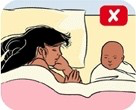
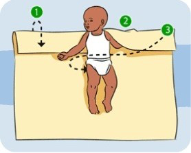
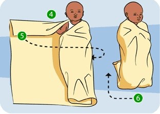
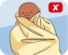

Wrapping and settling your baby to sleep
Knowing some ways to settle your baby down for sleep, especially when they're very young, can help both you and your baby to remain composed. Different things work for different babies, and at different times...and sometimes your baby just won't want to settle at all! But the good news is, that as your baby gets older, they should get better at re-settling themselves.
Generally, when your baby shows tired signs, you should:
- change their nappy
- wrap or swaddle them, and then
- put them in their cot to sleep
If your baby still has trouble settling to sleep after changing their nappy, being wrapped and put into their cot, some rhythmic, gentle patting might help:
- Lie your baby on their side facing away from you (but move them onto their back if they fall asleep).
- Place your hand gently on your baby's shoulder.
- Cup your other hand and pat your baby gently and slowly on the bottom or thigh, trying to be as rhythmic as possible.
- Try saying 'shhh' on each pat or softly singing a song.
- Slow your hand movements as your baby settles.
- Once your baby is quiet, stop patting but leave your hands on your baby for a few more seconds before putting your baby down to sleep.
You could also try patting the mattress beside your baby, or perhaps gently jiggling the cot. Experiment and see what works for your baby.
If your baby is very upset, it's important to stop and give them a cuddle and reassurance.
If nothing seems to be working, or you start feeling angry or upset, it's best to leave your baby in the cot. It won't hurt your baby to cry for a short time. Walk away and take a moment to calm yourself before trying again.
Wrapping your baby for sleep
The benefits of wrapping
Wrapping is soothing for some babies. It can also reduce the risk of SUDI including SIDS and fatal sleeping accidents by keeping them on their backs during sleep. Babies can be wrapped from birth up until they can roll onto their tummies (about 4-6 months)
Keep in mind that not all babies like to be wrapped! Follow your baby's cues, and don't continue wrapping if your baby resists. An infant sleeping bag is a good alternative. Like wrapping, they also help keep your baby on their back during sleep, reducing the risk of SUDI including SIDS and fatal sleeping accidents.
 Wrapping is not recommended for babies who share a bed with their parents. This can cause overheating, a known cause of SUDI including SIDS and fatal sleeping accidents. If your baby is sharing your bed, they should be dressed in the same way as you would dress yourself in this situation. Keep in mind that sharing a bed with your baby can be dangerous and is not recommended in some circumstances.
How to wrap your baby
Follow these instructions for a popular way of wrapping your baby.
- Fold the top edge of a lightweight cotton or muslin wrap down by about 20cm. Lay your baby on the wrap with their shoulders in line with the fold.
- Place one of your baby's hands under the fold. shoulder.
- Bring the edge of the wrap across their body and tuck it under their legs. 
- Place your baby's other hand under the fold.
- Bring the other edge of the wrap across your baby's body and tuck it in under your baby's back.
- Fold any extra length up and under your baby's legs. Babies like to be wrapped firmly but make sure that the wrap isn't too tight as wrapping your baby's legs and chest too tightly can lead to hip and breathing problems.
 Make sure the wrap doesn't cover your baby's head, ears or chin - wraps that are too high can make it hard for your baby to breathe and can cause your baby to overheat, which has been linked to SUDI including SIDS and fatal sleeping accidents.
What should your baby wear underneath the wrap?
In warm weather, your baby just needs a singlet and nappy underneath the wrap. Overheating has been linked with SUDI including SIDS and fatal sleeping accidents, so try to keep your baby's sleep environment at a cool, comfortable temperature.
 In cool weather, dress your baby in a lightweight jumpsuit underneath the wrap but don't use a bunny rug or blanket - this can cause overheating which has been linked with SUDI including SIDS and fatal sleeping accidents. It's also important to not overheat the house if possible, especially if your baby has an infection.
In cool weather, dress your baby in a lightweight jumpsuit underneath the wrap but don't use a bunny rug or blanket - this can cause overheating which has been linked with SUDI including SIDS and fatal sleeping accidents. It's also important to not overheat the house if possible, especially if your baby has an infection.
Adapted with permission from the Raising Children website, Australia's trusted parenting website.
This video shows some ways to wrap or swaddle a newborn baby.
Video: Wrapping a newborn
Sourced from the Raising Children website, Australia's trusted parenting website. For more parenting information, visit raisingchildren.net.au.